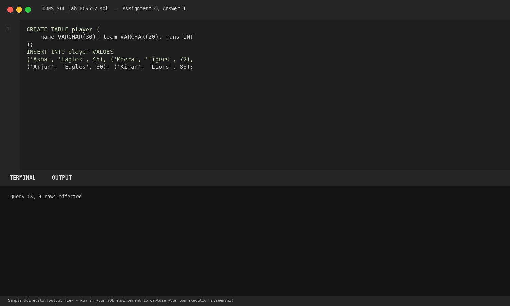
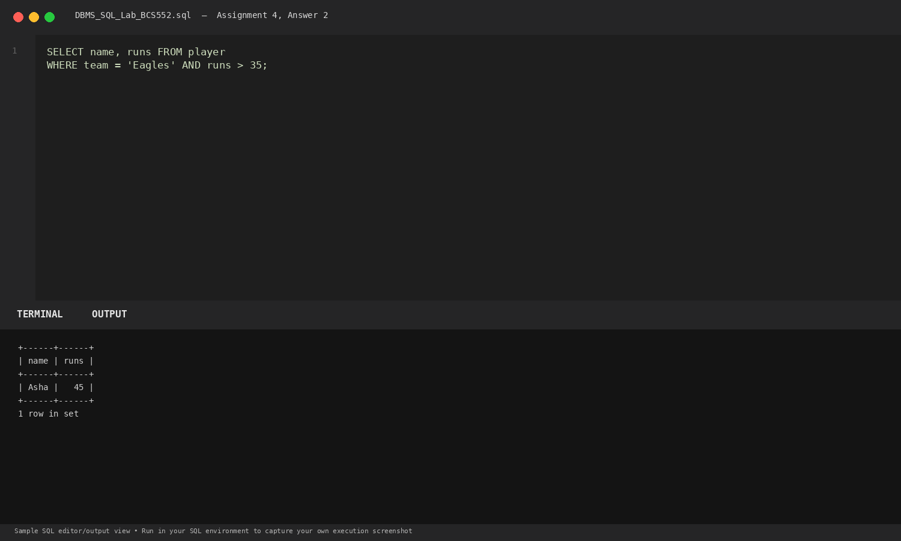
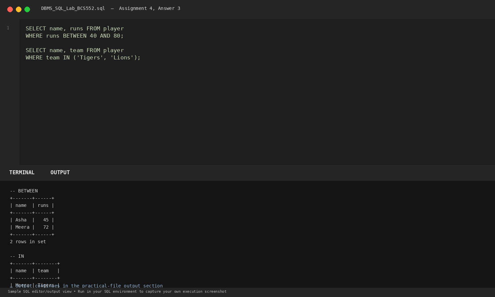

Task 1
Set up the player table
SQL Query
CREATE TABLE player (
name VARCHAR(30), team VARCHAR(20), runs INT
);
INSERT INTO player VALUES
('Asha', 'Eagles', 45), ('Meera', 'Tigers', 72),
('Arjun', 'Eagles', 30), ('Kiran', 'Lions', 88);Database Output
Query OK, 4 rows affected
Explanation: Creates sports player statistics table with player name, team affiliation, and total runs.
Terminal Screenshot Preview

Task 2
Eagles players with more than 35 runs
SQL Query
SELECT name, runs FROM player
WHERE team = 'Eagles' AND runs > 35;Database Output
+------+------+ | name | runs | +------+------+ | Asha | 45 | +------+------+ 1 row in set
Explanation: Uses logical AND requiring both conditions (team is Eagles and runs > 35) to evaluate to TRUE.
Terminal Screenshot Preview

Task 3
Use BETWEEN and IN
SQL Query
SELECT name, runs FROM player
WHERE runs BETWEEN 40 AND 80;
SELECT name, team FROM player
WHERE team IN ('Tigers', 'Lions');Database Output
-- BETWEEN query +-------+------+ | name | runs | +-------+------+ | Asha | 45 | | Meera | 72 | +-------+------+ 2 rows in set -- IN query +-------+--------+ | name | team | +-------+--------+ | Meera | Tigers | | Kiran | Lions | +-------+--------+ 2 rows in set
Explanation: BETWEEN specifies an inclusive range [40, 80]. IN checks if an attribute matches any value within a given set.
Terminal Screenshot Preview
